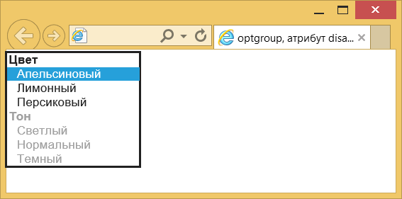

Атрибут disabled
| Internet Explorer | Chrome | Opera | Safari | Firefox |
| 4 | 1 | 3.5 | 1 | 1 |
| Android | Firefox Mobile | Opera Mobile | Safari Mobile |
| 1 | 1 | 6 | 1 |
Блокирует доступ к группе списка, при этом группа отображается другим цветом (обычно серым) и не доступна для выбора.
Синтаксис
<optgroup disabled>...</optgroup>Значения
Нет.
Значение по умолчанию
По умолчанию этот атрибут выключен.
Пример
<!DOCTYPE html>
<html>
<head>
<meta charset="utf-8">
<title>optgroup, атрибут disabled</title>
</head>
<body>
<form action="handler.php">
<p><select>
<optgroup label="Цвет">
<option value="c1">Апельсиновый</option>
<option value="c2">Лимонный</option>
<option value="c3">Персиковый</option>
</optgroup>
<optgroup label="Тон" disabled>
<option value="s1">Светлый</option>
<option value="s2">Нормальный</option>
<option value="s3">Темный</option>
</optgroup>
</select></p>
<p><input type="submit" value="Отправить"></p>
</form>
</body>
</html>Результат примера показан на рис. 1.

Рис. 1. Вид заблокированной группы в списке
Спецификация
Каждая спецификация проходит несколько стадий одобрения.
- Recommendation (Рекомендация) — спецификация одобрена W3C и рекомендована как стандарт.
- Candidate Recommendation (Возможная рекомендация) — группа, отвечающая за стандарт, удовлетворена, как он соответствует своим целям, но требуется помощь сообщества разработчиков по реализации стандарта.
- Proposed Recommendation (Предлагаемая рекомендация) — на этом этапе документ представлен на рассмотрение Консультативного совета W3C для окончательного утверждения.
- Working Draft (Рабочий проект) — более зрелая версия черновика после обсуждения и внесения поправок для рассмотрения сообществом.
- Editorʼs draft (Редакторский черновик) — черновая версия стандарта после внесения правок редакторами проекта.
- Draft (Черновик спецификации) — первая черновая версия стандарта.
Особняком стоит живой стандарт HTML (Living) — он не придерживается традиционной нумерации версий, поскольку находится в постоянной разработке и обновляется регулярно.